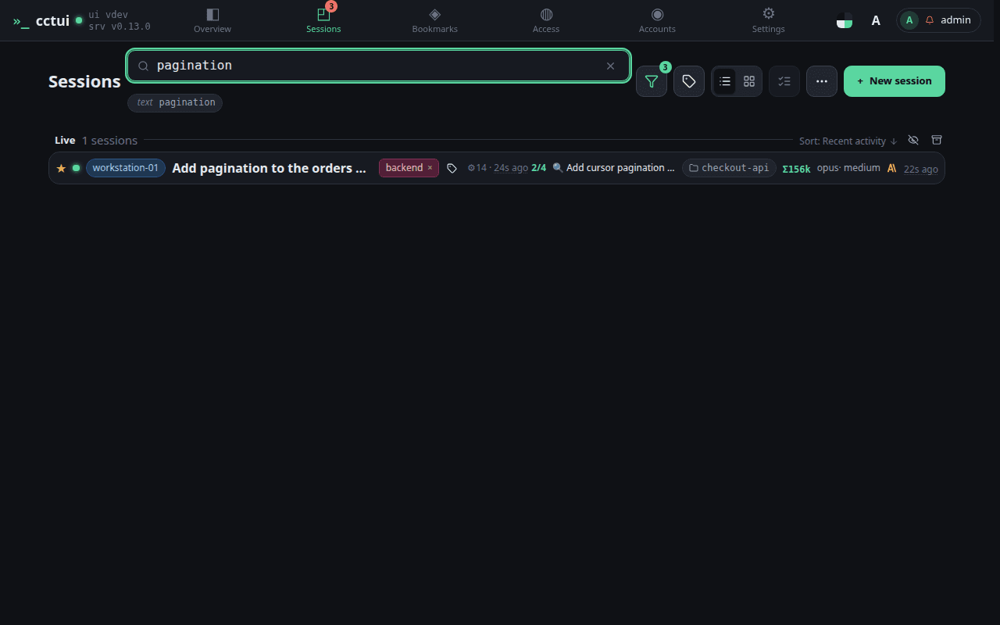
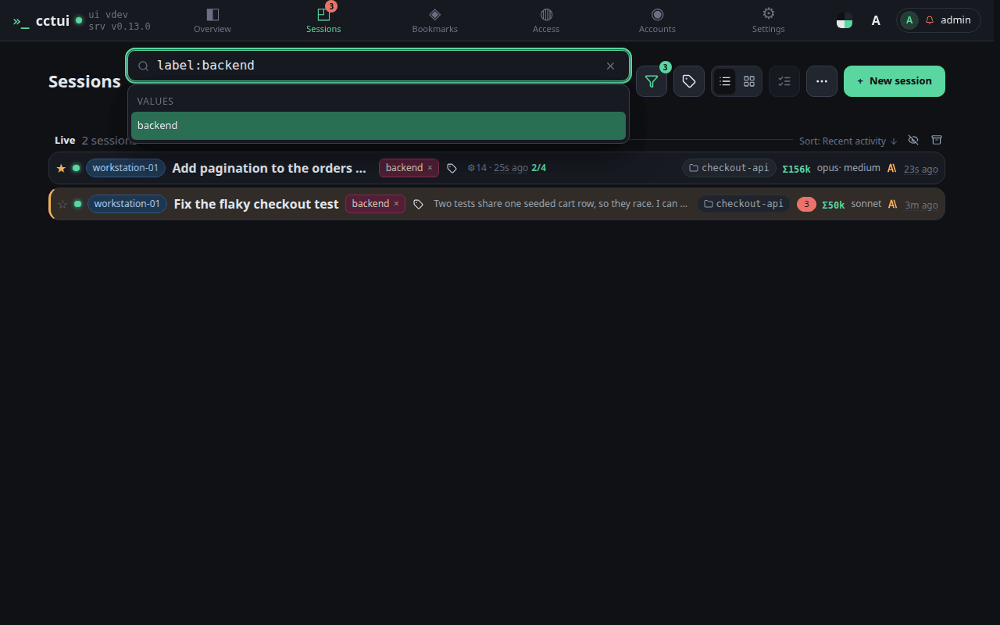

One box over every session This searches what the agents actually said and did, not just the names you gave the runs. A session you never labelled is still findable by what it touched.Start from the whole list Every session you have run is searchable, live ones and finished ones alike.

Search the transcripts, not just the titles A plain word is matched against what the agents actually said and did, so you can find a run by what it touched.

Narrow by label, machine or status Typed filters like label:, machine: and status: combine with the free text to cut a large fleet down fast.